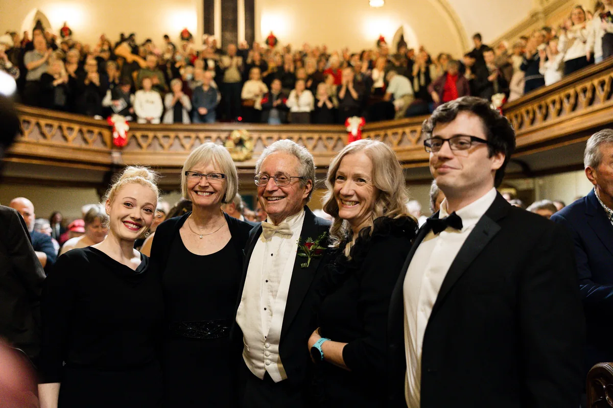
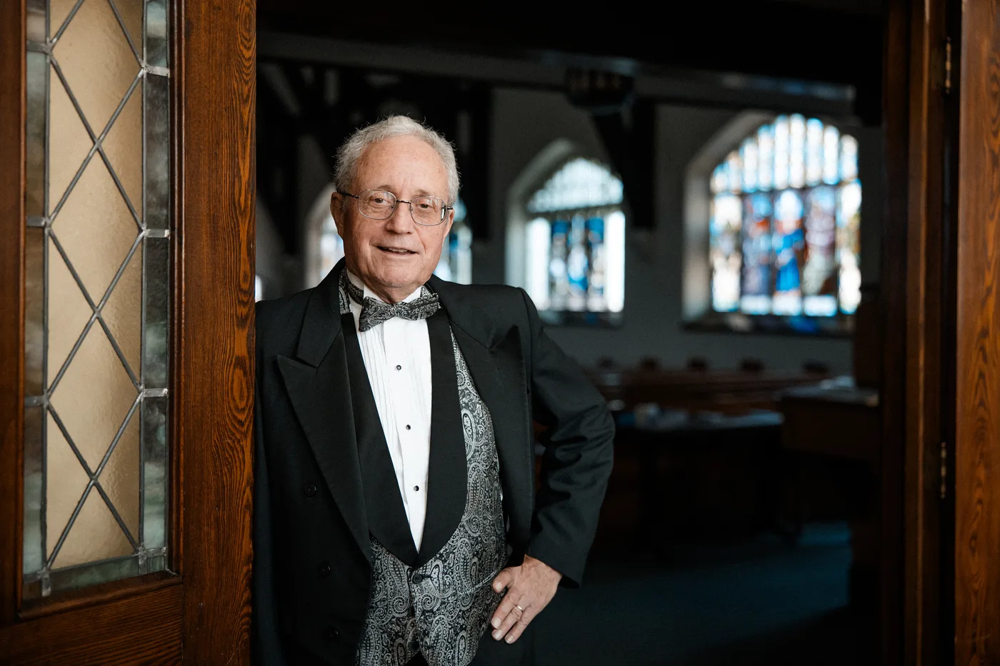

I don't believe in vague promises. Here's what happens when the right strategy meets the right story.
Case Study
Wayside Academy was a small independent school with a powerful educational mission and almost no fundraising infrastructure. When I came on board, the school had roughly 50 donors and annual fundraising revenue of about $250,000. There was no development plan, no donor communications program, no systematic approach to cultivation or stewardship.
I wrote the case for support. I created the donor communications: newsletters, appeal letters, direct mail campaigns. I developed the donor pipeline, identified and cultivated new prospects, and professionalized every aspect of how the school engaged its supporters. And I met with the major donor prospects who were simply waiting to be asked, successfully earning multiple six-figure gifts.
"When John came on board, we had about 50 donors and no real fundraising infrastructure or strategy. Within a year, he'd grown our donor base to over 300 and more than doubled our annual revenue. He developed our case for support, launched our first direct mail campaign in years, and professionalized every aspect of how we engaged supporters.
For a small organization with limited resources, having someone who could think strategically and also execute was invaluable. And it's worth noting - during this time, John was also serving as our headmaster, building out numerous other systems that resulted in record student enrollment and 100% teacher retention, and also teaching. The fact that he accomplished more in fundraising as essentially a side responsibility than many full-time development professionals might in the same period says something about how efficiently and effectively he works.
Oh, and did I mention that he promised to jump into our local Peterborough lake, in January (remember: this is Canada!), if we successfully hit our campaign goal. And when we did, he did. And, he somehow convinced me to join him in this crazy scheme. I can vouch that the water was frigid. But, that's the kind of personal, skin-in-the-game commitment he brings to his clients."
John taking the Polar Plunge after hitting the campaign goal - January, Peterborough, Canada.
Frank CallaghanFormer Board Chair, Wayside Academy
Case Study
The Peterborough Singers are one of Ontario's most beloved community choral organizations. It was founded 35 years ago by Syd Birrell, a local organist and choir director.
When the organization decided to launch the Syd Birrell Legacy Fund to mark Syd's retirement, they needed someone who could handle both the strategic demands of an ambitious campaign and the deeply personal nature of what it represented.
This was not a standard fundraising project. The choir Syd Birrell founded 35 years ago is not just one of the best community choirs in Canada, it has also been transformational in the lives of countless people, including Syd.
The deep heart in the choir can in part be traced to the role it played in helping Syd and his family navigate the cancer diagnosis and death of his son, James, in 2001. Syd conducted Handel's Messiah for the Singers on the very eve of his son's death. In the decades since, hundreds of people have found hope and healing thanks, either as a choir or audience member.
This campaign needed a deep sensitivity to the unique heart and history of this choir. Thus, the work began not with spreadsheets, but with stories: conversations with Syd and his family, with long-time choir members, with supporters who had been part of the Singers' journey for decades.
I developed the campaign strategy, crafted the donor communications, and managed the engagement. But the heart of the work was storytelling: finding the language that honoured what the Peterborough Singers meant to the people who built it, and who have benefitted from it, and making that story compelling enough to inspire a new generation of supporters.
You can view the campaign materials here: Case for Support and Campaign Magazine.

Syd Birrell (centre) with his sister Diana (left), wife Pam (right), and daughter Rebecca and son Ben.
"For 35 years I served as Artistic Director of the Peterborough Singers, a choir of 130 members that I founded. When I retired, it was suggested that a fund be established and money raised as a legacy to help the Choir with both transition and in moving forward once a new Artistic Director was chosen.
John Jalsevac was engaged by the board to run this campaign, which became known as the Syd Birrell Legacy Fund. In five short weeks, under John's guidance, we raised over $100,000, more than double any campaign total we had run in the previous 35 years. The campaign is still ongoing, and that number continues to grow.
John is smart, compassionate, intuitive, hard-working, and extremely knowledgeable when it comes to the art of fundraising. He is well connected and diligent. He is a leader. His writing is extraordinary. He has the ability to find stories that matter in the lives of both audience members and choir members as they relate to the Peterborough Singers, and to write extraordinary articles which are then shared in newsletters before the real asking for money even happens. This establishes great interest and arouses the desire to help financially.
John knows the databases and other tools of the trade that are necessary to track donations. He knows how to research and identify donors of high net worth. He speaks very well to our audiences during concerts.
I can wholeheartedly recommend John as the person an organization wants to run a campaign and handle every facet of that project. I am happy to take questions from prospective organizations."
Syd BirrellFounder & Artistic Director (retired), The Peterborough Singers

Syd Birrell, founder of the Peterborough Singers.
Apollo Advancement also provides strategic digital marketing, SEO, and content strategy services for professional organizations. This work includes the development and execution of comprehensive marketing plans, website optimization, and content programs designed to build visibility and credibility. Current and past clients include Bussey Ainsworth Barristers, a Peterborough-based law firm.
Every engagement starts with a conversation. Let's talk about where you are and where you want to be.
Start a Conversation